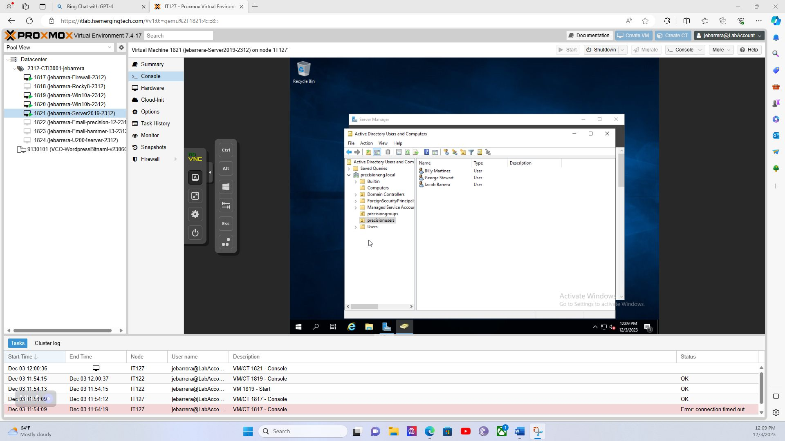
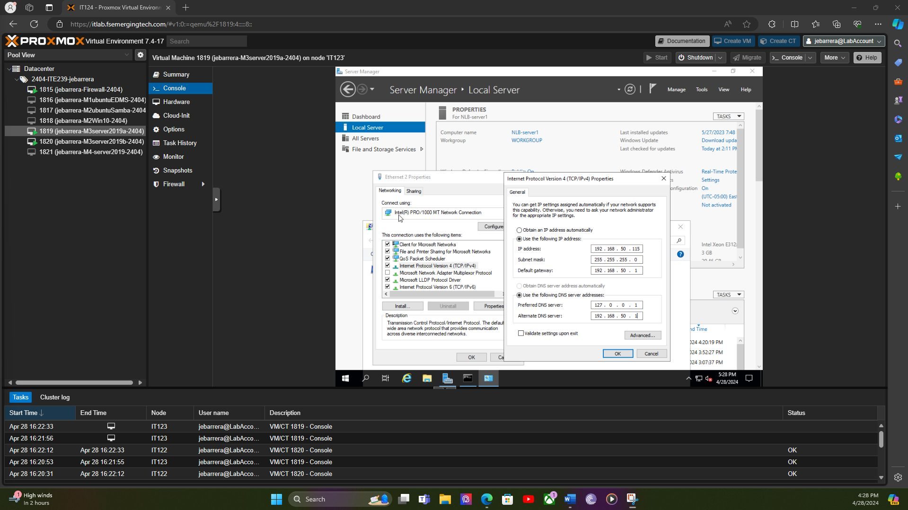
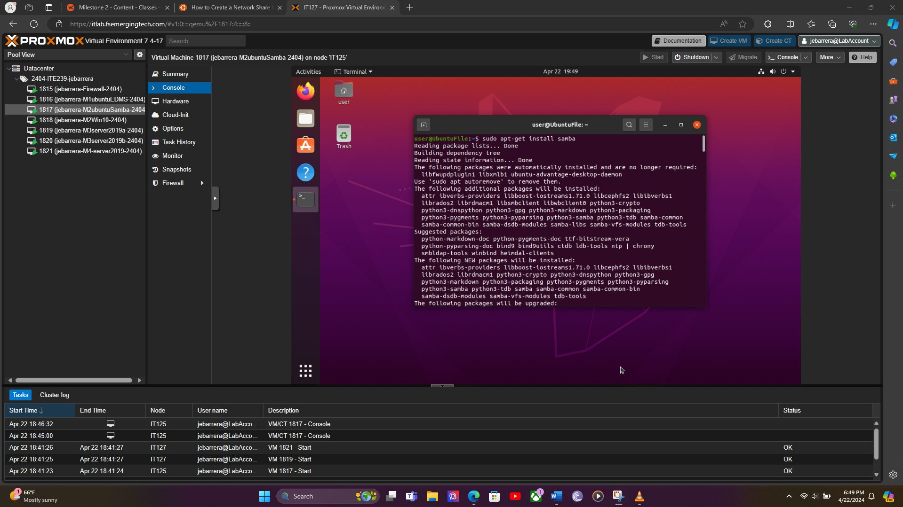
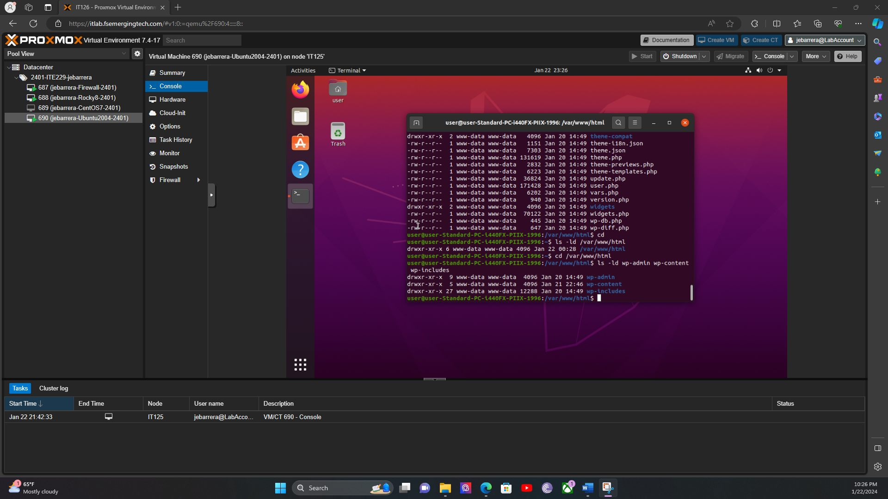

Top priority for help desk
Active Directory & Account Provisioning
Step-by-step walkthrough: domain join, user provisioning in ADUC, and mapped shared drives — the #1 real ticket type.
IT Help Desk · B.S. Cybersecurity · Security+ in progress
B.S. in Cybersecurity (Full Sail, Oct 2025) with hands-on lab experience in Active Directory, Nessus vulnerability scanning, Windows Server, Linux administration, and NIST-aligned security policy. Six-plus years of high-volume customer support under time pressure. CompTIA Security+ in progress.
Hands-on coursework from Full Sail University — labeled honestly as academic lab projects, not paid employment. Each maps directly to real help desk and Tier 2 work.

Step-by-step walkthrough: domain join, user provisioning in ADUC, and mapped shared drives — the #1 real ticket type.

Step-by-step walkthrough: Nessus non-cred → credentialed scan → CVSS triage → tickets → re-scan verify.

Step-by-step: Sysprep Server 2019 nodes, set static networking, then build a two-node NLB cluster.

Step-by-step: install Samba on Ubuntu and lock down share permissions — the "can't access the shared drive" ticket in lab form.
Password Standard, Change Control Policy, and New Account Creation Procedure — governance docs that define the tickets help desk technicians handle.

Step-by-step: Nginx on Rocky, WordPress deploy + permission hardening, plus Mayan EDMS via Docker.
Support-style writeup with encrypt/decrypt commands and a troubleshooting table — based on OpenSSL lab work.
Read KB article452 flashcards, 500+ practice questions, and exam simulation — proof I'm actively preparing for Security+ certification.
View on GitHubFormal training plus ongoing certification prep.
Full Sail University — hands-on labs in AD, Nessus, Windows Server, Linux, and NIST policy.
Full Sail University — infrastructure, web services, and systems administration coursework.
Currently studying — backed by SecPlus Sensei, a self-built 500+ question study app.
Carnival Cruise Lines — 15+ guests per shift, ADA compliance, real-time problem resolution under pressure.
Aligned to IT Help Desk / Tier 1–2 support roles.
Windows 10/11, Windows Server 2019/2022, Ubuntu/Debian Linux, basic macOS troubleshooting.
Active Directory (user/group provisioning, permissions), LDAP, account lifecycle, MFA concepts.
DNS, DHCP, IP configuration, VPN basics, NLB, Nginx reverse proxy, SSL/TLS certificates.
Nessus (credentialed & non-credentialed scanning), CVSS triage, patch/harden procedures, Linux file-permission lockdown.
PowerShell (server/network config), Python, Bash/Linux CLI.
NIST-aligned policy writing, change control, ticket tracking, remote support (RDP), clear user communication.